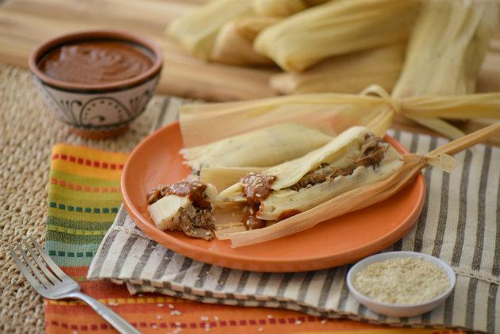

Buñelos
20/06/2018

Casi todas los latinos tenemos una receta heredada de nuestras abuelas con las indicaciones para preparar los buñuelos más deliciosos. Colombianos, cubanos y mexicanos todos tienen una versión de estos sabrosos bocaditos, perfectos para acompañar una taza de café o chocolate caliente un día lluvioso.

Juan: Riquisimo, mi madre los hacia igual!!!.
Ruben: Me gustaria saber un poco mas de la region de donde es este plato tipico.
Tamales
18/06/2018

La mejor parte de esta receta tradicional es hacer los tamales en familia, ¡especialmente si tienes una familia numerosa en la que todos pueden ayudar! Si no tienes una receta familiar, adopta esta receta de tamales mexicanos.
Carlos: Que gran articulo gracias.